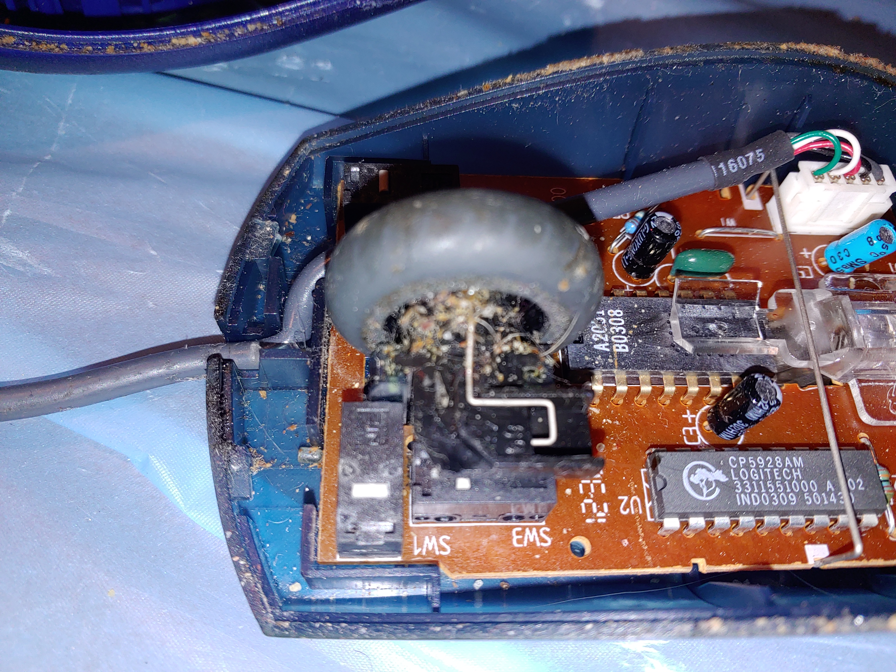
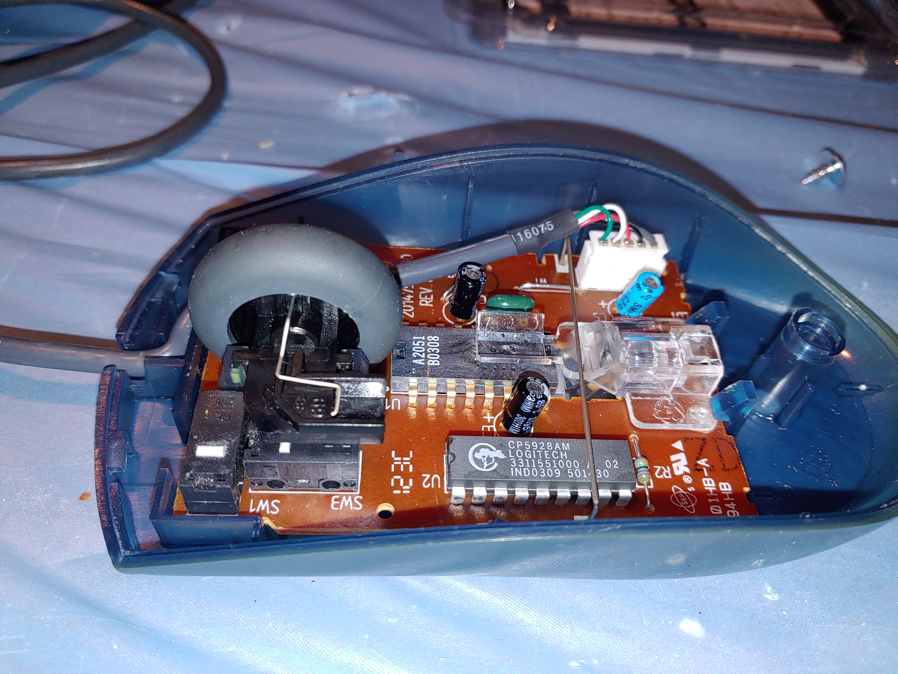

Project Overview
Dining Room PC
This is my dad's pc. He got it from his last job before he retired, but i installed the os and excel, using an office 2016 liscense i got from work at the time. I also use sites like mrkeyshop to get keys for windows and office when necessary. I recently cleaned the mouse, attempted and failed to clean the keyboard, bought a new keyboard, and cloned the hard drive. This hard drive cloning process was very difficult because the original drive had a corrupt file that was at first unclonable.
Hard Drive Cloning

I have cloned many hard drives of other computers before, but this time was different. Macrium reflect gave me an error, error 9. I read some forums and eventually started to believe this was due to a corrupt file.
I deleted the files from a previous recovered hard drive. This freed up more than half of the used hard drive space. It at least made the failed cloning attempts fail more quickly. I hoped it would eliminate the corrupt file too, I'm still not sure if it did or not.
I made several attempts to clone. After each failed attempt, i needed to clear the hard drive. I did this by using a program called diskpart.
diskpart steps:
- type diskpart into start menu
- right click and run as administrator
- type list disk
- type select disk then disk number, ie select disk 1.
- type clean
Since macrium reflect was not working, i tried aomei backupper. It did a little bit better, but still failed. Each attempt took a long time, the errors were vague and difficult to google answers to, as probably no one has ever tried to clone the same os on the same hardware using the same software, and so this project took at least 3 weeks. Eventually I tried aomei partition manager, it had an option, quick clone, that ended up working.
At this time, august 2022, I think aomei partition manager is the best cloning software, If I have to clone another hard drive, it is what I will use.
I am still concerned that due to all the errors, i used some extra read write cycles on the ssd, so maybe it will fail, but if that happens, i've still got the old hdd, and new excel files are being regularly backed up on a flash drive, so even drive failure does happen, it should be ok. My mass offline data storage project should also add another layer of defense against this risk when it is completed.
Mouse Cleaning 2022
This is a very old laser mouse, it could be from as long ago as 1999, it could be a 930495-0403, but i'm not sure. My dad does not like newer mice like the razer deathadder or logitech g pro x superlight because of the dpi button. He feels it's out of control. Explaining the dpi button does not work. If I gave him a newer one, he would probably just use this one instead. It was dirty and not working properly though. I found out that this was because the spring inside was no longer connected, so the scroll wheel acted funny. It was also extremely dirty, but now it's cleaned and like new. Unfortnately, the same can't be said for the keyboard, which i destroyed while trying to clean, first time that's ever happened, but that's going to be another post.
-used the same methods I did to clean the mouse and keyboard of my asus rog laptop. Including the 50% rubbing alcohol and qtips.
-fully removed and reset the wheel and spring, that was probably the hardest part.
-washed shell and othe plastic parts in the sink with dish soap and water
-used a paintbrush to sweep dust off the circuit board.
before:
after:
Click Here to download additional 2022 mouse cleaning related images and files.